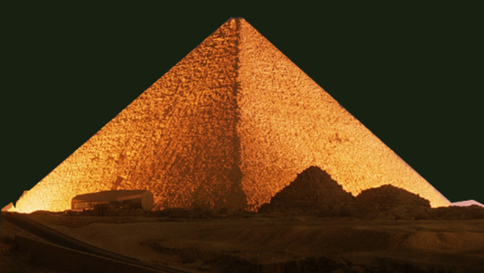

Во времена, когда построили пирамиду Хеопса, её высота достигала 147 метров — это соизмеримо со зданием в 50 этажей. Однако под воздействием землетрясений каменная верхушка обрушилась, и также осыпалась облицовка. Более того, бесчисленные поколения египтян растаскивали каменные блоки для строительства жилья. Сейчас же высота сооружения составляет 138 метров. Удивительное мастерство древних каменщиков Каменные плиты скрепляет особый строительный раствор, технология производства которого по сей день остаётся тайной. Любой современный цемент за 5000 лет обратился бы в пыль, но не древнеегипетский.
